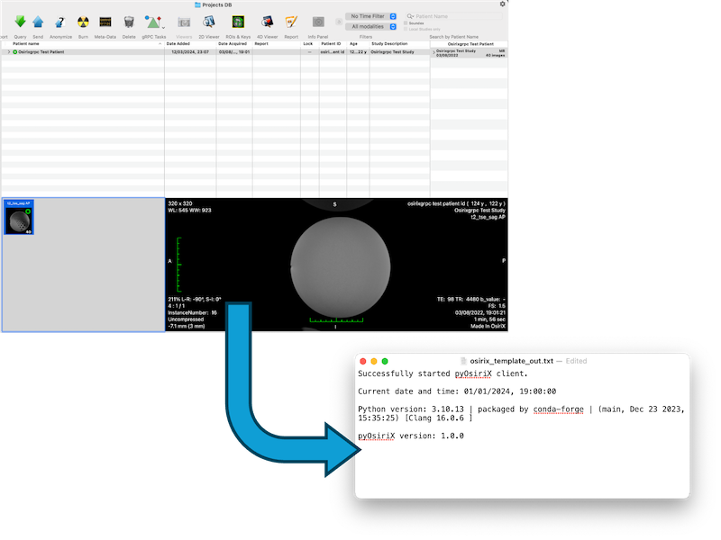

Template
A template example script that may be used to format other scripts.
Categories:

Authors
| Author(s) | Joe Bloggs1 |
| Institution(s) | 1The Institute of Research |
| Contact | joe.bloggs@institute.com |
Datasets
Any data.
Details
This example script is used to demonstrate how to write pyOsiriX examples. It can be run as any of the four categories.
Expected Outcome
This should export the current date, time and python version to a file on the Desktop called osirix_template_out.txt.
Script
""" An example pyOsiriX script. """
import os
import sys
from datetime import datetime
import osirix
def get_user_desktop_path() -> str:
""" Return the absolute path to the Desktop directory
Returns:
str: The absolute path
"""
return os.path.join(os.path.expanduser("~"), "Desktop")
if __name__ == "__main__":
# Obtain the output file location
desktop_path = get_user_desktop_path()
output_file = os.path.join(desktop_path, "osirix_template_out.txt")
with open(output_file, "w") as fhandle:
# Check whether the connection with OsiriX could automatically be established.
if osirix._osirix:
fhandle.write("Successfully started pyOsiriX client.\n\n")
else:
fhandle.write("Could not establish pyOsiriX connection.\n\n")
# Write the current date/time and python version
fhandle.write(f"Current date and time: {datetime.now().strftime('%m/%d/%Y, %H:%M:%S')}\n\n")
fhandle.write(f"Python version: {sys.version}\n\n")
# Finally write the version of pyOsiriX being used
fhandle.write(f"pyOsiriX version: {osirix.__version__}")